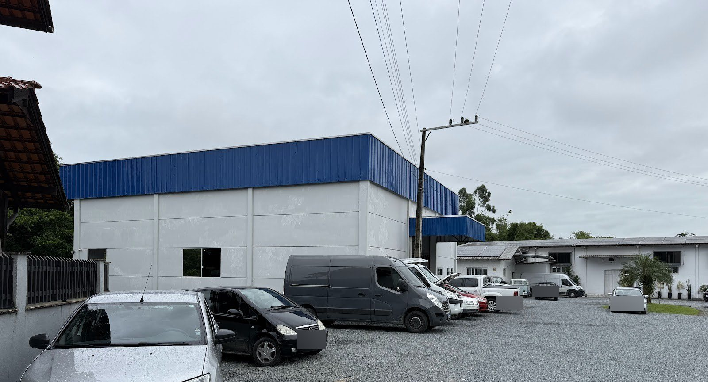
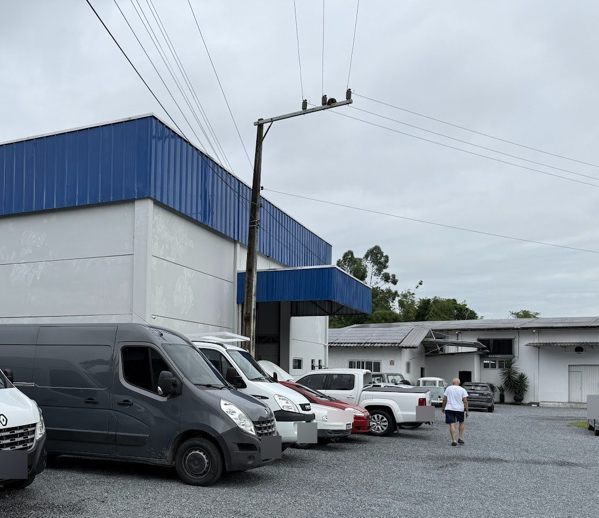
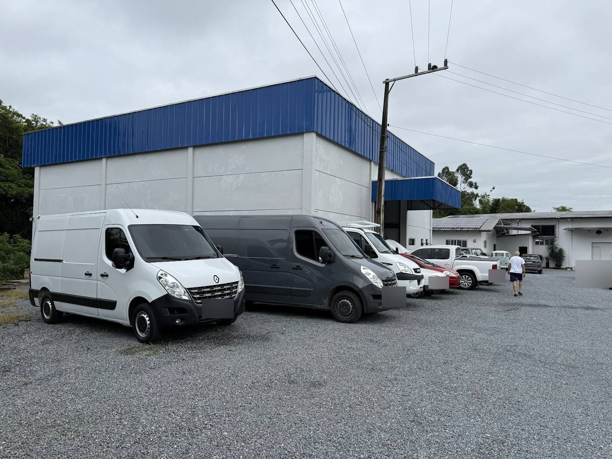

ORDEM DE SERVIÇO · via do cliente
Orçamento e mecânica com garantia em Gaspar.
Mecânica geral, motor, freios, suspensão e troca de óleo. Carros nacionais e importados, e linha diesel.
- Oficina
- Jc Auto Mecânica
- Responsável
- Jucimar Preilipper
- Endereço
- R. Alfredo Schramm, 45 · Gasparinho
- Aberta em
- 05/02/2018
- (47) 99756-4758
- Avaliação
- 4,9★ · 174 no Google

01 Serviços
Marque o que o seu carro precisa e mande a lista pronta no WhatsApp. Serviços conforme a descrição da própria oficina no Google.
02 Garantia
A oficina declara garantia em todos os serviços, com equipe qualificada e preço justo.
Prazo e condições da garantia: a confirmar na oficina.
03 Observações de quem já levou o carro
“extrema qualidade… Preço justo”
João Andrieti · 5★ · 10/07/2026“Atendimento 10… serviço rápido.”
Rodrigo Junkes · 5★ · 07/08/2026Chegou por indicação da GKF Fretamentos e elogia o Jucemar por resolver um problema que outras oficinas não resolveram.
Samuel Lemes · 5★ · 27/05/2026 · resumoDestaca a oficina atualizada em ferramentas e diz que indica para os colegas.
Alexandre Felipe · 5★ · 28/05/2026 · resumo
Avaliações do Google. A oficina responde às avaliações.
04 Em números
- 4,9★nota no Google
- 174avaliações
- +8anos em Gaspar
- seg–sexatendimento
05 Horário
| Dia | Manhã | Tarde |
|---|---|---|
| Segunda | 07:30–12:00 | 13:30–18:00 |
| Terça | 07:30–12:00 | 13:30–18:00 |
| Quarta | 07:30–12:00 | 13:30–18:00 |
| Quinta | 07:30–12:00 | 13:30–18:00 |
| Sexta | 07:30–12:00 | 13:30–18:00 |
| Sábado | fechado | |
| Domingo | fechado | |
Fonte: Google Maps. Feriado de 12/10: horário a confirmar.
06 Entrega e retirada
Rua Alfredo Schramm, 45
Gasparinho · Gaspar/SC
CEP 89112-036


Placas dos veículos borradas nas fotos.